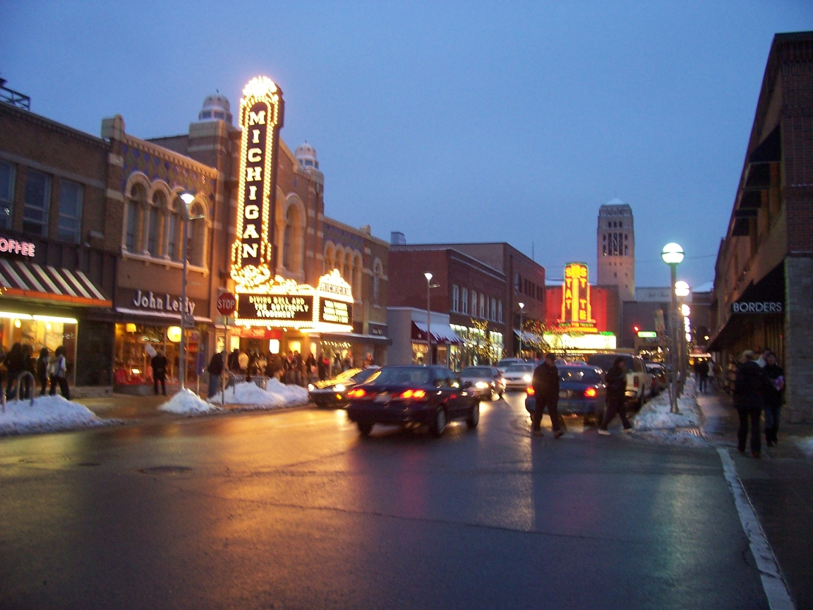
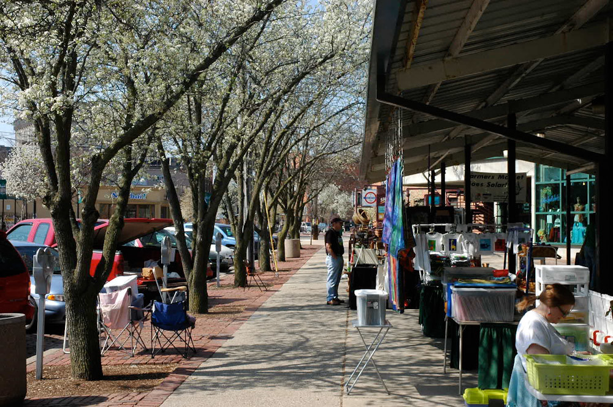
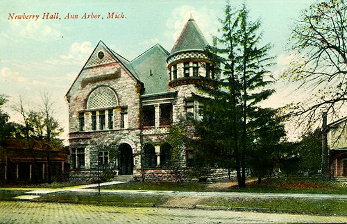
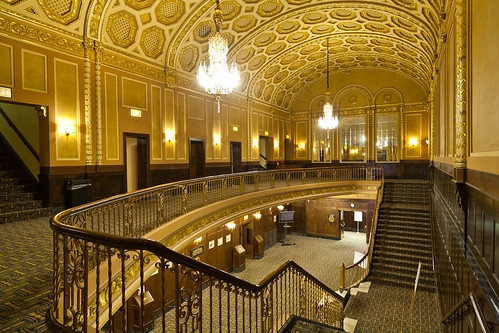

One of the Creative and Cultural meccas of Michigan, Located in Washtenaw County and positioned along the Huron River. Known for being the town of artistic and intellectual expression as it is home to the University of Michigan. Downtown Ann Arbor is full of festivals, restaurants, shopping and numerous cultural events. The lively environment of Ann Arbor will keep you entertained and busy as there's plenty to do and see here!
As of July 1, 2022, the population of Ann Arbor is estimated to be around 119,875. The 5th most populated city in Michigan. Ann Arbor's population decline rate is higher than Lansing, but it's also more expensive to live there. Considered to be one of the best cities to live in Michigan, Ann Arbor's had a slow but steady growth as they have built many high rises in the downtown area over time.
Ann Arbor was settled in 1824, but wasn't officially incorporated until 1851 by John Allen and Elisha Rumsey and became the seat of washtenaw county that same year.
Based in Washtenaw County, Ann Arbor is located in the lower peninsula of southeast Michigan, positioned along the Huron River. Source
Ann Arbor is primarily classified as urban in nature, but there are areas in the surrounding regions of Washtenaw county that would be considered suburban or more rural. *sourced from the U.S Census Bureau
The Median household income in Ann Arbor as of 2021 is around $73,276, which is about around 16% more than the median income of the state of Michigan as a whole, which is around $63,302. *sourced from the U.S Census Bureau